Solo Guitar
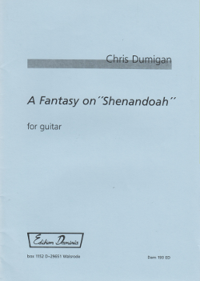
Fantasy on "Shenandoah"
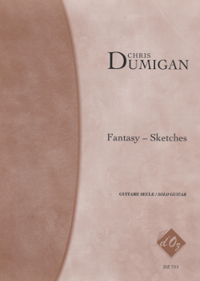
Fantasy Sketches - Volume 1
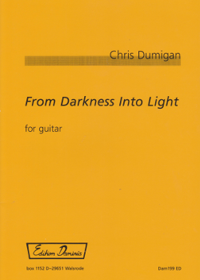
From Darkness Into Light
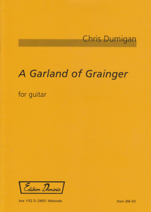
A Garland of Grainger
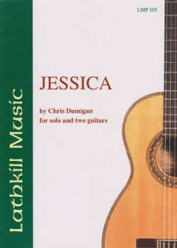
'Jessica'
for solo or two guitars
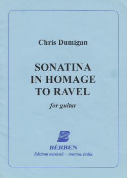
Sonatina in Homage to Ravel
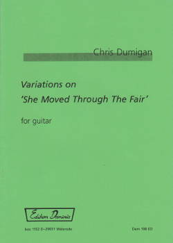
Variations on
"She Moved Through the Fair"
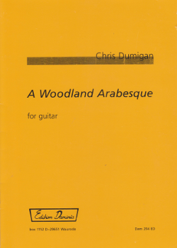
A Woodland Arabesque
Guitar Ensemble
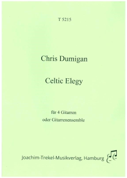
Celtic Elegy
for four guitars
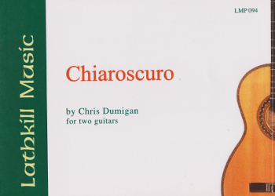
Chiaroscuro
for two guitars
Dance Around the Maypole
for guitar orchestra
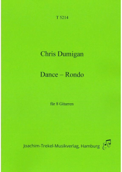
Dance Rondo
for four or eight guitars
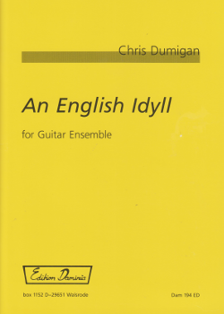
An English Idyll
for guitar orchestra
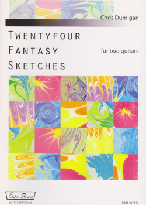
Fantasy Sketches - Volume 2
for two guitars
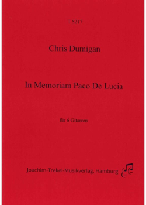
In Memoriam Paco De Lucia
for guitar ensemble
'Jessica'
for solo or two guitars
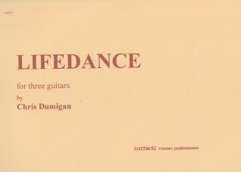
Lifedance
for three guitars
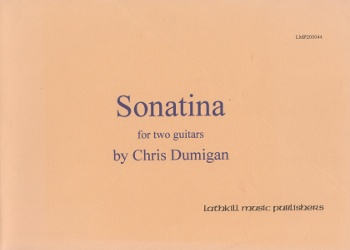
Sonatina
for two guitars
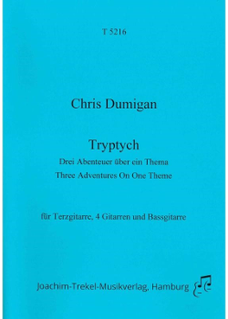
Tryptych
for guitar orchestra
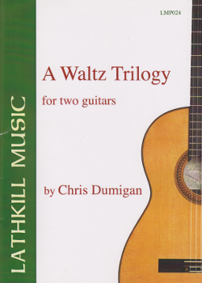
A Waltz Trilogy
for two guitars
Mixed Ensemble
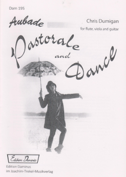
Aubade, Pastorale & Dance
for flute, viola and guitar
La Chanson de L'Avoirdupois
for contralto and guitar
Introduction and Allegro
for bayan and guitar
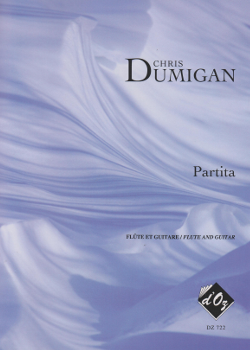
Partita
for flute and guitar
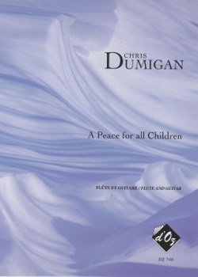
A Peace for All Children
for flute and guitar
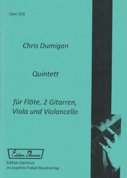
'Quintet' for two guitars,
flute, viola and 'cello
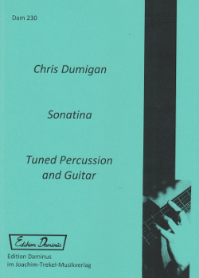
Sonatina
for tuned percussion and guitar
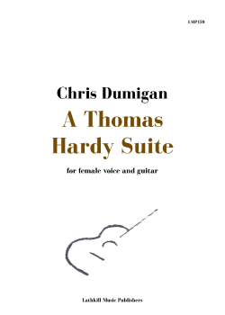
A Thomas Hardy Suite
for female voice and guitar
Other Instruments
Blues for Alison
for solo flute
On the Bass-Line
for 6-string electric bass guitar
Suite
for 10-course Renaissance Lute